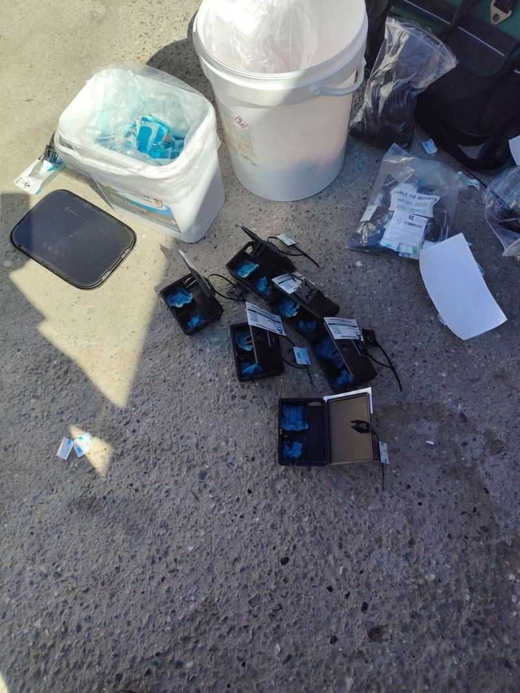

Traitement complet et sécurisé contre les rongeurs (rats noirs, surmulots, souris) pour habitations, commerces et établissements de restauration.
Risques sanitaires & dégâts matériels
En cas de morsure ou griffure
Streptobacillose : infection bactérienne directe transmise par la salive (fièvre, éruptions).
Infections cutanées : risque élevé de surinfections locales graves.
Tétanos : contrôle vaccinal obligatoire immédiatement après tout contact cutané.
Infestation par crottes & urine
Leptospirose : transmise par l'urine sur les surfaces/aliments (atteintes rénales et hépatiques).
Salmonellose & Hantavirus : inhalation de poussières souillées par les déjections séchées.
Contamination alimentaire : perte sèche et obligation de destruction des stocks souillés.
Dégâts dans l'habitation
Risque d'incendie : câbles électriques rongés provoquant des court-circuits.
Isolation détruite : dégradation de la laine de verre et des plaques de plâtre.
Fuites d'eau : canalisations PVC et tuyaux en polyéthylène perforés.
Nos méthodes d'éradication professionnelles
Traitement ciblé
Postes d'appâtage sécurisés
Boîtiers renforcés et verrouillés à clé, totalement inaccessibles aux enfants et aux animaux domestiques. Ils contiennent des rodenticides de haute appétence à effet retardé (anticoagulants biocides), garantissant l'élimination de toute la colonie sans éveiller la méfiance des autres rongeurs.
Écologique & instantané
Pièges mécaniques & tapettes haute précision
Installation de pièges à frappe instantanée (tapettes professionnelles renforcées) et de nasses de capture. Indispensable dans les zones sensibles (cuisines professionnelles, établissements agroalimentaires, réserves) où l'usage de produits chimiques est strictement proscrit.
Diagnostic
Détection optique & poudre traçante UV
Utilisation de poudres fluorescentes révélées sous lumière ultraviolette (UV) pour cartographier les itinéraires précis des rats et détecter les points d'entrée invisibles à l'œil nu dans les faux-plafonds, cloisons ou vides sanitaires.
Protection durable
Hermétisation & barrières physiques (proofing)
Obstruction définitive des trous et passages avec des matériaux résistants au grignotage (grillages inox à mailles serrées, mousse expansive armée, bas de portes anti-rongeurs). Cette étape empêche toute re-contamination future du bâtiment.

Postes d'appâtage sécurisés prêts pour installation
Reconnaître une infestation avant qu'elle ne s'installe
Un couple de rats peut donner naissance à plus d'un millier de descendants en une année. Entre les premiers indices et la colonie installée, il s'écoule rarement plus de quelques semaines : c'est la raison pour laquelle un diagnostic précoce coûte infiniment moins cher qu'un traitement tardif. Voici ce qu'il faut savoir observer.
Les excréments trahissent l'espèce
Surmulot : crottes de 15 à 20 mm, en forme de fuseau, groupées près des sources de nourriture.
Rat noir : crottes de 10 à 12 mm, effilées aux deux extrémités, dispersées le long des parcours.
Souris : crottes de 3 à 6 mm, très nombreuses, semées un peu partout.
Des déjections brillantes et souples signalent une présence active ; sèches et friables, elles indiquent un passage ancien.
Traces de passage et coulées
Marques de gras : traînées sombres le long des plinthes et des tuyaux, laissées par le pelage.
Coulées : sentiers dégagés dans la poussière, la végétation ou l'isolant.
Rongements : encoches fraîches et claires sur le bois, le plastique ou les gaines électriques.
Les rongeurs empruntent toujours les mêmes trajets, en longeant les murs. Ces coulées orientent le placement des postes.
Bruits, odeurs et comportements
Grattements nocturnes : dans les combles ou les cloisons, entre le crépuscule et l'aube.
Odeur d'ammoniaque : caractéristique d'une colonie installée dans un volume fermé.
Animal visible en plein jour : signe d'une population déjà nombreuse, la compétition poussant les individus à sortir.
Un chat ou un chien qui fixe obstinément une plinthe ou un vide sanitaire est souvent le premier détecteur.
L'espèce en cause change entièrement la stratégie : le rat brun ou surmulot vit au ras du sol, dans les caves, les égouts et les vides sanitaires ; le rat noir est un grimpeur qui colonise les charpentes et les combles ; la souris se contente d'une ouverture de 6 mm et grignote sans cesse de petites quantités. Identifier le bon adversaire évite de traiter au mauvais endroit.
Ce que la réglementation impose
La dératisation n'est pas seulement une question de confort. Plusieurs textes encadrent les obligations des propriétaires, des bailleurs et des professionnels de l'alimentaire, ainsi que l'usage des produits eux-mêmes.
Propriétaires et bailleurs
La loi du 6 juillet 1989, modifiée par la loi ELAN de 2018, impose qu'un logement décent soit exempt de toute infestation d'espèces nuisibles et parasites. Un locataire confronté à une infestation préexistante peut s'en prévaloir auprès du bailleur.
Le règlement sanitaire départemental fait obligation aux propriétaires de maintenir leurs immeubles en bon état de dératisation et de faire procéder aux traitements nécessaires.
En copropriété, les parties communes, locaux poubelles et vides sanitaires relèvent du syndic.
Commerces alimentaires et restaurants
Le règlement européen 852/2004 impose la mise en place de procédures de lutte contre les nuisibles dans tout établissement manipulant des denrées.
Un plan de lutte documenté est attendu lors des contrôles : plan d'implantation des postes, fiches de visite, produits employés, relevés d'activité.
Une infestation constatée peut entraîner une mise en demeure, voire une fermeture administrative.
Usage des rodenticides
L'achat et l'application professionnelle de rodenticides sont réservés aux détenteurs du Certibiocide, certificat délivré par le ministère de la Transition écologique.
Les anticoagulants les plus concentrés sont réglementés au niveau européen en raison du risque d'empoisonnement secondaire des rapaces, chats et chiens.
Les appâts doivent être placés en postes sécurisés et inviolables, inaccessibles aux enfants et aux animaux domestiques.
Dezinsect Corse intervient en tant qu'applicateur certifié Certibiocide. Cette certification n'est pas un simple label commercial : elle conditionne légalement l'accès aux produits professionnels et engage la responsabilité de l'applicateur sur le choix des substances, leur dosage et leur retrait en fin de traitement.
Après le traitement : empêcher le retour
Éliminer une population sans corriger ce qui l'a attirée revient à programmer la prochaine infestation. La phase de prévention pèse autant que le traitement lui-même, et l'essentiel relève de gestes simples.
Fermer les accès
Une souris passe par 6 mm, un rat par 20 mm : gaines techniques, passages de canalisations et bas de portes sont les points d'entrée classiques.
Grillage inoxydable à mailles fines, mousse expansive chargée ou mortier — la mousse seule est rongée en quelques jours.
Grilles anti-rongeurs sur les entrées d'aération et les descentes d'eaux pluviales.
Supprimer nourriture et abris
Stockage des aliments et croquettes en contenants rigides hermétiques, jamais en sac posé au sol.
Poubelles à couvercle fermé, composteur éloigné des murs et surélevé.
Dégagement du pourtour des bâtiments : bois de chauffage, gravats et broussailles offrent gîte et couvert.
La saisonnalité en Corse
Automne : pic d'entrées dans le bâti dès les premières fraîcheurs et les premières pluies.
Fin de saison touristique : les locaux qui se vident après l'été deviennent des refuges tranquilles.
Zones agricoles et cours d'eau : la Plaine Orientale et les abords de fleuves entretiennent des populations qui se rabattent vers l'habitat.
Un contrôle de suivi quelques semaines après le traitement permet de vérifier l'arrêt réel de l'activité et d'ajuster les points d'hermétisation restants. C'est aussi ce qui distingue une intervention professionnelle d'un appâtage ponctuel : la vérification du résultat.
Quels sont les signes d'une infestation de rats ou de souris ?
Les signes les plus fréquents sont des crottes noires allongées, des traces de grignotage sur câbles ou emballages, des bruits de grattement le soir, et une odeur d'urine persistante dans les zones confinées.
Les postes d'appâtage sont-ils dangereux pour mes enfants ou mes animaux ?
Non. Nous utilisons exclusivement des postes d'appâtage renforcés et verrouillés à clé, totalement inaccessibles, conformes à la réglementation biocide en vigueur.
Combien coûte une dératisation en Corse ?
Le tarif dépend du niveau d'infestation, de la surface à traiter et des méthodes nécessaires (appâtage, piégeage, hermétisation). Un devis gratuit est établi après diagnostic, sans engagement.
En combien de temps intervenez-vous ?
Sous 24h sur la Costa Verde et la Plaine Orientale, et rapidement sur le reste de la Corse (Bastia, Ajaccio, Balagne, Corte, Extrême-Sud).